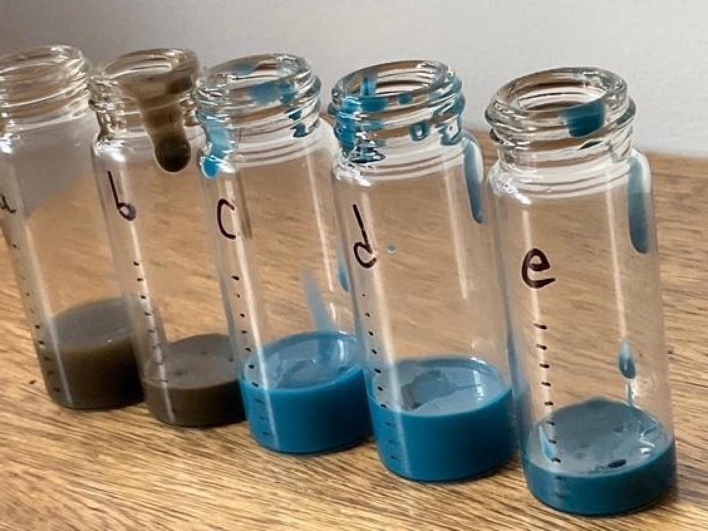
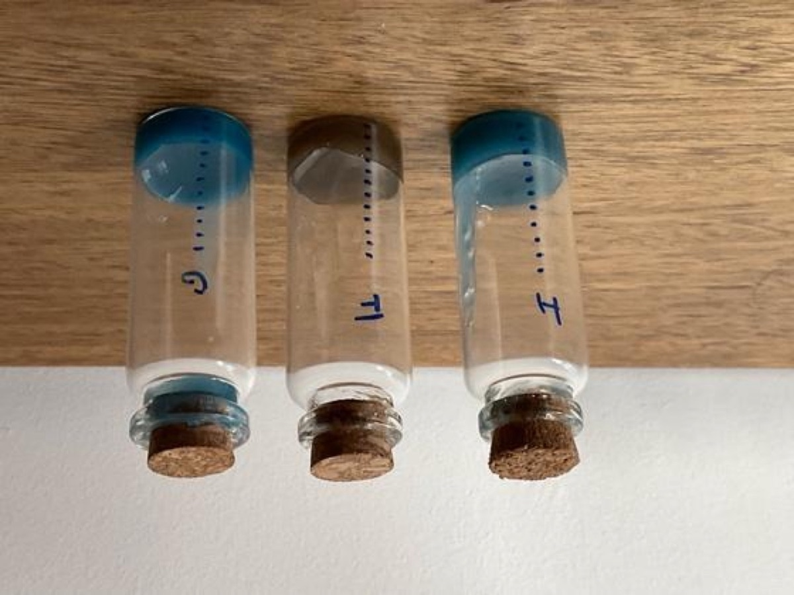
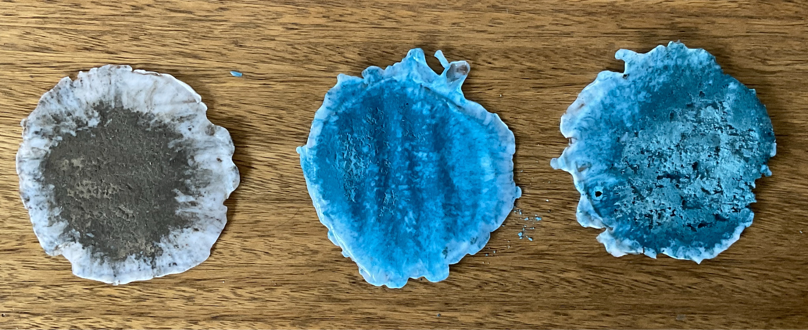

TALLER DE PROTOTIPOS 2026 · MCD UAI · TAREA 1
Banco de pruebas de baja resolución: dos rutas de fabricación que llegan al mismo hallazgo de carga viable.
Cabezas, F. · López, V.
Encargo T1 · Taller de Prototipos, prof. Maximiliano Pazols
FASE 1 · NO CURÓ

Carga 20–33% de polvo sustituto. La resina queda líquida bajo una cáscara curada: la opacidad del filler bloquea la UV a 3 mm de profundidad.
FASE 2 · CURÓ Y TRASLÚCIDO

Carga reducida a 7% + 13 ml de resina. F (cemento), G (esmalte) y H (mixto) curaron por completo en 3 min por capa. G fue el más parejo y saturado.
Umbral de curado entre 7% y 20% de carga. La variable crítica es la opacidad del filler, no la concentración en sí misma.
Tiempo de sedimentación
Cemento · 15–20 min
Precipita directo al fondo.
Esmalte · 40–50 min
Desciende en plumas, más lento.
Por qué no alcanza a sedimentar
Coherente con la ley de Stokes: v ∝ Δρ · d².
El curado UV toma 3 min por capa. En ese tiempo, la lazurita solo se desplazaría ≈1,8 mm.
El curado congela las partículas antes de que sedimenten.
Esto explica por qué la carga se mantiene uniforme en las probetas curadas, pese a la diferencia de densidad entre polvo y resina.
Carga de polvo por muestra
PA · cemento · 11% parcial
PB · esmalte · 11% bueno
PC · mixto · 27% insuficiente
Zona viable de carga ≈11% de polvo (muestra PB).

Molienda: 20 pulsos → pellet de 3 mm, límite del equipo. Superar 20% de carga requeriría un agente de acoplamiento silano.
02 · MEDIA RESOLUCIÓN
Este ciclo se repite serie tras serie de probetas en media resolución, hasta pasar el checkpoint ASTM. En alta resolución la lógica cambia: se valida con impresiones de calibración (benchy, torre de temperatura, tolerancias), no con series repetidas de la misma probeta.
01 · El símil
Usamos cemento como sustituto, con mayor densidad que la lazurita, para acotar el proceso antes de tener lapislázuli real.
02 · SLA curó
El curado completo solo se logró al bajar la carga a 7% de esmalte.
03 · FDM homogeneizó
Solo la muestra PB (11%, esmalte vitrificable puro, el símil más cercano a la lazurita) logró el mejor encapsulado.
Cabezas, F. · López, V. · Taller de Prototipos 2026